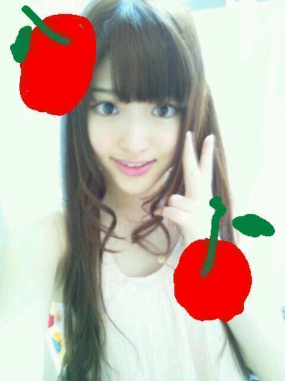

2012/0928Friココアおいちーっ(o・・o)
こんばんごっっ(o・・o)
さゆりんごっっ(o・・o)
はろー＼(^^)／
大阪個別ありがとうございました(^^)！
関西弁癒し！
世界に関西弁を広めるのが
うちの夢です////
なんでやねんっ
あかんあかんっ
なんぼですかー？
にゃはっ(o・ω・o)
名古屋もよろしくお願いします(>_<)
いっぱいお話しよなー///
今日はスカパーさんで
左胸の勇気をパフォーマンスしましたー＼(^^)／
あんまり
やる機会ないから
めっちゃ張り切ってやったら
しゃがむとこで
体がバウンドするぐらい
勢いよくしゃがんでもうて
膝が あおたんなったんよー
頑張ったしるしと思っとくんよー＼(^^)／
けど、下手な子ほど
よく怪我するって言うやんねー
松村の膝なー
あおたんと床に擦った傷が
多々あるんよー／(^^)＼
別にまっちゅんが
ダンス下手とか言いたい訳ちゃうよ(￣▽￣)
え？何？下手やって？
うっちゃいわー(ノ_・,)
ただ
怪我の量と技術は
なんか関係あるんかなーとか思ってー
まぁ、いっか(*^^*)あは
大阪の写真！

いつもは下ろしたらあかんから
髪型自由の個別は下ろすことが多いなー(^^)
ほんで、今日も松村の今！
また撮れたてほやほやのさゆりんごなり！
しかし、残念ながら
髪をまとめた
前髪なしのオフモードさゆりんなり！
家ではいつもこれ！笑

実はさゆりんのでこには秘密がある！
めっちゃしょうもないけど
今は内緒〜笑
別にすぐに言ってもいいレベルやけどな(￣▽￣)ｂ笑
ほなら、またねー＼(^^)／
さいなら！
2012/0922Satうぎゃーっ(o・・o)
おつかれさまつむらっ(o・・o)
さゆりんごっっ(o・・o)
全国握手会＠ポートメッセ名古屋で
ございましたー＼(^^)／
沢山のかたに来ていただき
ほんまに嬉しかったです！
ミニライブで
ステージに出たら
沢山のかたがいて
びっくりしました！
アメイジング！
自己紹介は噛んでしまったよー(´；ω；`)
なんかね〜ライブとか久し振りやから
めっちゃ緊張してん！笑
でも楽しかったー＼(^^)／
見てくれた皆さんありがとう(*^^*)
またライブやりたいね！
握手会も楽しかったよー＼(^^)／
始めましてのかたが
多かったね☆
まあやとれなりん推しのみなさんも
ありがとうございました♪
今日も変なこと言ってたら
すみませんー。笑
みなさんほんまに優しくて面白くて
松村も凄く楽しかったよー＼(^^)／
ギアスをわかってくれはるかたがいて
良かったです///
唐揚げにのってくれた方も
ありがとう(*^^*)
明日は大阪で
個別握手会です！
地元！
また楽しみにしてます♪
お待ちしてますね〜(*^^*)ノ
そんで！
横の会場で全国握手会を
されてたＳＫＥ４８さんのとこに
御挨拶にいったのですが、
ついにー
松村香織さんにお会いしてしまいました！
沙友理のほうの松村が
会いたいとわがままを言ったら
会えてしまいましたー(´；ω；`)
なんてことやー／(^^)＼
凄くかわいくて明るくて
素敵な方でした(>_<)
いつか一緒にお仕事とか
できたらいいなー(*´ー｀*)てへ
名古屋お邪魔しましたー＼(^-^)／

ドードー鳥んごっ(o・・o)
明日は何着よかなー(*´ー｀*)
ちなみに
かずみんと同じ部屋やよー＼(^-^)／
寝顔に落書きすんぜっ(￣▽￣)ｂ
おやすみなさゆりんっ(o・・o)/~
2012/0922Satなんたることだっ(o・・o)
こんばんごっっ(o・・o)
さゆりんごっっ(o・・o)
うわーん
コードギアスがみれへんよー(´；ω；`)
コードギアスってアニメねー
映画になったんよー
もう公開されたんよー
もうって、上映開始は
多分...８月４日やったけなー？
うん、１ヶ月以上前なー／(^^)＼
最近忙しくて
やっとみれると思ったら
全然やってへんのよー
もお、ほんまに
なんでなんよー(´；ω；`)
こりゃもうアニメ見返すしかないなー
最終回が凄く好きです。
握手会でギアス発動させるぞー
松村沙友理が命じる！
唐揚げを買ってこい！ってなー笑
あ、でも銀魂はじまるね☆
思ったより早い再開に
わくわく(*´ー｀*)
そして、明日は
名古屋で全国握手会なりー＼(^^)／
待ってるよー＼(^^)／
良かったら来てください！
れなりん、まあや推しの
みなさまも
よろしくお願いします＼(^-^)／
軽く自己紹介しとこ。
松村沙友理でございます。
あだ名はさゆりん！
生まれも育ちも大阪。
けど大阪人っぽくないと言われるのが
疑問です。
好な食べ物は唐揚げ！
今日もお弁当は唐揚げを選択しました☆
なにか検定をとりたいと
模索しております。
歳は２０でございます。笑
趣味は水泳であります。
水が大好きです。
ちゃぷんちゃぷん好き。
けど、日光は大の苦手でございまして
夏は部屋に引きこもって
アニメばかりみております。
スポーツも結構好きでして
テニスとバレーの経験があります...。
あれ？
この自己紹介全然おもろないやん(笑)
と、こんな感じの
おもんない人間ですが
人とお話するのは大好きなので
ぜひ、沢山話しかけてやってくだされ。
ほならーここでー
質問タイムー！
明日、松村との会話に困ってるかたは参考に
明日、残念ながら来れない方は
ぜひコメントでお話を！
ほなら、いきまーす！
今まで行った国でおすすめはどこの国？
ない方は行きたい国はどこ？
台湾に行ってから
凄く海外に興味がある松村。
よろしくお願いします＼(^-^)／
じゃじゃん！
最近自撮りを全くしてやんかったから
いま、撮った！
撮れたてほやほや！

ほなら、またねー＼(^^)／
さゆりんごでしたっ(o・・o)/~
2012/0916Sunウォーアイニーっ(o・・o)
ニーハオっ(o・・o)
さゆりんごっっ(o・・o)
ただいま、日本！
みなさーん、ただいまー＼(^^)／
帰ってきたよー＼(^^)／
台湾いいとこやったよー＼(^^)／
いい人ばっかりやったよー＼(^^)／
みんな、明るくてにこにこしてたよー＼(^^)／
「りんご」って服屋さんがあったよー＼(^^)／
しかもチェーン店なんよー＼(^^)／
すごいやんねー＼(^^)／
台湾のファンの方も
さゆりんごぱーんちっ
やってくれたよー＼(^^)／
警備員さんにめっちゃとめられてたよー＼(^^)／笑
町にいっぱいｈｔｃ Ｊの
ポスターあったよー＼(^^)／
そうなんよ！
乃木坂４６のＣＭが
台湾でも流れるんやってー＼(^^)／
すっげー＼(^^)／
ｈｔｃのお店もいっぱいあったよー＼(^^)／
ふわふわのアイス食べたよー＼(^^)／
タピオカ食べたよー＼(^^)／
ななみんと凄いの食べたよー＼(^^)／
アヒルか鴨の舌！笑
コリコリして
おいしかったよー＼(^^)／笑
また行きたいよー＼(^^)／
台湾の言葉
勉強したくなったよー＼(^^)／
ウォーアイニーっ(o・・o)照
愛してるよ〜って意味らしいです///
台湾いいとこ！
日本と仲良しでいてほしい(>_<)
またライブとかで
行けたらいいなー＼(^^)／
台湾のファンの方にお会いしたら
日本のみなさんにも会いたくなったんよー
明日はお仕事頑張るのだー＼(^^)／
ほなら、またねーっ(o・・o)
さゆりんごでしたっ(o・・o)
2012/0911Tue愛されてっ(o・・o)
こんばんごっっ(o・・o)
さゆりんごっっ(o・・o)
今日はちょっと松村のママとパパについて
お話させてください(*^^*)
この前、東京にきていた母から
こんなメールがきました。
ーーーーーーーーーーーーーーーーーー
From.お母さん
今日ついに、スカイツリーの展望台に
あがりました。
景色がとても綺麗やったよ(^^)
ーーーーーーーーーーーーーーーーーー
そしてこのメールに添付されていた写真が
こちら！

・・・・・・指入ってますがなーww
せっかく、スカイツリーに のぼったのに
撮った写真がこれなん！？笑
お母さーん(´；ω；`)
さゆりはめっちゃ笑いました。
ありがとう、お母さん。
元気でた(^^)笑
そして、PARCO公演を見にきていた父
終わった後、お腹を空かせているだろうからと
さゆりんにパンを買っててくれました。
渡されたのは、スコーンとベーグル...。
さゆりんは思いました、
いやいやいや、なんで２つとも
口んなか カピカピなるやつなん！と。
そう、食べたことある方は
わかるでしょう...。
２つとも激しく口の中の水分を
奪っていく奴らなのです！！！！笑
多分、うちの父は若い子向けの物を
選んでくれたのでしょう。
その優しさに感謝して
ゆっくり味わいました。
大量のお茶と共に...
お父さん、ありがとう。
元気でたよ(^^)
私はこんなお茶目な両親が大好きです。
何故、今日このお話を書かせてもらったのかと言うと！
今日、９月１１日は
二人の結婚記念日なのです！！
東京公演の時も
落ち込むさゆりんの話を
母は泣きながら、
でもずっと笑顔で聞いてくれて
私をぎゅーっと、抱き締めてくれました。
父は黙ってずっと見守ってくれてました。
泣いてばかりの私に
「大阪に帰ろう」とは
言いませんでした。
でも、もし言われていたら
松村は本当に逃げてしまって
すっごく後悔してたと思います。
帰ろうと言わなかった両親の優しさと強さに
本当に感謝しています。
そしていっぱい心配かけてごめんなさい。
沙友理は本当に
二人のもとに産まれてきて
よかったって思います！
松村家の一員で良かったです！
旅行が好きな家族やから
さゆりんの仕事が落ち着いたら
またみんなで旅行いきたいねー＼(^^)／
それまで、いっぱい心配かけるやろけど
頑張ります(>_<)
なんだか、凄く個人的なブログでごめんなさい。
まぁ、たまには
いいよね☆笑
ちなみに、ずっと前のブログで書いた
９月２日お誕生日は
さゆりんの姉でしたー＼(^^)／
みんな、このこと忘れちゃったやろー(´；ω；`)
松村は答え書くん忘れてた。笑
さぁ、東京かえって
録画してあるクレヨンしんちゃん見るぞー＼(^^)／
って明日から、松村沙友理
台湾に行きますー(*^^*)
初めてやー＼(^^)／
ドキドキワクワク！
また帰ってきたら感想かくねー(*^^*)♪
ほなら、またねーっ(o・・o)